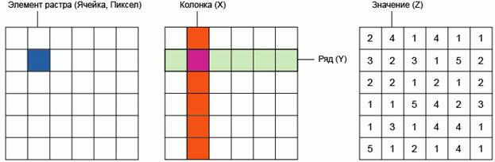
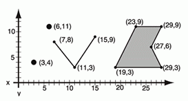

КАРТОГРАФИЧЕСКОЕ ИЗОБРАЖЕНИЕ — свойственное карте изображение
Земли, других небесных тел или небесной сферы и расположенных на них объектов в
той или иной системе картографических условных знаков — обозначений этих
объектов, их количественных и качественных характеристик.
При изучении Земли и ее отдельных
частей используются геоизображения – пространственно-временные модели
земной поверхности. Необходимость определять местонахождение объектов на Земле
вызвала к жизни составление карт и планов, появление глобусов, производство
аэрофото- и космических снимков.
Объемной картографической моделью
Земли является глобус, который помогает представить положение планеты в
пространстве. Географический глобус (от лат.глобус – шар) – это уменьшенная
модель Земли, отражающая ее шарообразную форму. Достоинства глобуса –
наглядность, отсутствие искажений картографического изображения, возможность
демонстрации осевого вращения Земли.
План – это чертеж местности, выполненный
в условных знаках и в крупном масштабе (1:5000 и крупнее). Планы создаются в ходе
непосредственных инструментальных, глазомерных или комбинированных съемок на
местности либо в результате дешифрирования аэрофотоснимков. Планы охватывают
небольшие пространства, не более нескольких квадратных километров и поэтому
строятся без учета кривизны земной поверхности. Они используются для
ориентирования, проектирования отдельных инженерных сооружений, проведения
сельскохозяйственных работ и т.п.
Карта – уменьшенное, обобщенное,
условно-знаковое изображение Земли, других планет или небесной сферы,
построенное по математическому закону (то есть в масштабе и проекции). Карта
показывает размещение, свойства и связи различных природных и
социально-экономических объектов и явлений. Карты составляют, используя
результаты полевых съемок, других картографических источников, аэро- и
космических съемок, статистических и литературных данных.
Изображение,
содержащее произвольное число цветовых каналов, называют многоканальным.
Они применяются для специальных целей, например: для печати дуплексов.
Классическое дуплексное
изображение (duotone) — это печать одноцветного изображения двумя
красками, одна из которых черная, а другая цветная (коричневая, голубая или
зеленая). Хотя может использоваться несколько дополнительных красок.
Этот способ печати
издавна использовался полиграфией для компенсации недостаточного количества
тонов, которые может обеспечить печать только одним цветом. Дополнительные
цвета применяются для расширения тонального диапазона. В полиграфических
технологиях широко использовались такие типы дуплексов, как стальной тон
(черная краска с холодной голубой), сепия (черная краска с коричневой). Можно
подсвечивать тоновое изображение и другими красками. При этом полиграфисты и
разработчики программного обеспечения рассматривают дуплексы как разновидность
полутоновых (нецветных) изображений.
Дуплексы:
- однокрасочные дуплексы
(представляют собой полутоновые (в градациях серого) изображения, отпечатанные
с помощью одной нечерной краски).
- двух-, трех- и
четырехкрасочные дуплексы (представляют собой полутоновые изображения,
отпечатанные с помощью соответственно двух, трех или четырех красок.
Использование тех или иных красок в дуплексе определяет общий тон изображения,
а не цвета отдельных элементов.).
До 50-х гг. ХХ в. изображение на снимках было черно-белым, позже стали
получать цветные, а затем спектральные изображения.
Бинарное изображение (двухуровневое,
двоичное) —
разновидность цифровых растровых изображений, когда каждый пиксель может
представлять только один из двух цветов.
Значения каждого пикселя условно
кодируются, как «0» и «1». Значение «0» условно называют задним планом или
фоном (англ. background), а «1» —передним планом (англ. foreground).
Часто при хранении цифровых бинарных
изображений применяется битовая карта, где используют один бит информации для
представления одного пикселя. Также, особенно на ранних этапах развития
техники, двумя возможными цветами были чёрный и белый, что не является
обязательным.
Из-за этого бинарное изображение
иногда могут называть однобитным, монохромным, чёрно-белым и т. д., что не
совсем верно.
Благодаря наличию всего двух
возможных значений пикселей(«0» и «1») бинарные изображения, а однобитовые
бинарные в ещё большей степени, очень хорошо сжимаются, особенно с
использованием словаря данных и отличаются малым объёмом данных, по сравнению с
другими типами растровых изображений. Наиболее популярные алгоритмы сжатия:
PackBits
RLE
JBIG / JBIG2 (наиболее эффективный)
LZW
CCITT Group 3
CCITT Group 4
Большинство форматов файлов для
хранения растровых изображений позволяют хранить бинарные растры. Например,
такие популярные, как TIFF, BMP, PCX и др.
Значительное практическое применение
бинарные растровые изображения находят в цифровой картографии и
геоинформационных системах, пространственном анализе.
Полутоновое изображение — это изображение, имеющее множество
значений тона, и их непрерывное, плавное изменение.
Примерами полутоновых изображений
могут быть рисунки, картины, выполненные красками, фотографии.
Как и все растровые изображения
полутоновое кодируется в цифровом виде с помощью битовой карты (матрицы,
хранящей значения элементов изображения (пикселей)). Каждый пиксель
полутонового изображения может кодироваться различным количеством бит, что
определяет количество возможных полутонов.
Например:
2 бит — 4 полутона,
3 — 8,
4 — 16,
8 — 256 и т. д.
При этом, однобитовое бинарное
изображение (1 бит на 1 пиксель) можно считать вырожденным полутоновым,
способным передать лишь 2 полутона (чёрный и белый, например), или же его
частным случаем.
Множество возможных полутонов
называют уровнями серого (англ. grayscale), не зависимо от того, полутона
какого цвета или его оттенка передаются. (Аналогично тому, как бинарное
изображение, часто называемое «чёрно-белым», может при отображении выглядеть
«чёрно-зелёным».) Таким образом, уровни серого не отличаются по спектральному
составу (оттенку цвета), но отличаются по яркости. Количество возможных
полутонов в данном случае есть глубина цвета, которую часто передают не в
количестве самих полутонов, а в количестве бит на пиксель (англ. bitperpixel,
bpp).
Какое из значений в допустимом
диапазоне будет считаться самым ярким, а какое самым тёмным не имеет значения,
т. к. число, являющееся значением каждого пикселя — всего лишь условный код
яркости. Достаточно указать направление отсчёта.
Например, может существовать
полутоновой растр, где на каждый пиксель отведено 8 бит, изображение имеет 256
полутонов, пиксели со значением 0 являются белыми, пиксели со значением 255 —
абсолютно чёрными, а остальные полутона равномерно распределены между данными
значениями.
В изобразительном искусстве и быту
чаще всего применяют полутоновые растры с глубиной цвета 8 бит (что равно 1
байт), т. е. каждый пиксель изображения может принимать 256 различных условных
значений яркости: от 0 до 255. Этого вполне достаточно, чтобы правильно
отобразить чёрно-белую фотографию.
В науке и технике часто такого
диапазона и дискретности представления яркости не достаточно. Например, в
аэрофотосъёмке и космической съёмке на выходе могут получать полутоновые
изображения с глубиной цвета (количеством бит на пиксель) 16 или 32 (bpp).
Некоторые форматы хранения растровых
изображений (например, TIFF) позволяют задавать с помощью палитры точные
фотометрические характеристики изображения. Такая палитра представляет собой
таблицу, где каждому условному уровню серого (задаваемому целым числом — кодом)
ставится в соответствие какая-либо фотометрическая величина. Это также часто
используется на практике в тех случаях, когда условного отличия яркости одного
участка изображения от другого не достаточно. Например, при дешифрировании
аэрокосмических снимков с целью прогнозирования урожая или оценки поражённости
вредителями, необходимо знать точное количество зарегистрированного излучения.
Спектрозональные изображения - изображения, полученные отдельно в
нужном спектральном интервале. Такие изображения называются спектральными.
Спектральные изображения выполняются
с помощью светофильтра в определенной части видимого солнечного спектра.
Например, возможно фотографирование в красной, синей, зеленой, желтой части
спектра. При этом используется двухслойная эмульсия, покрывающая пленку. Такой
способ фотографирования передает ландшафт в необходимых цветах. Так, например,
смешанный лес при спектральном фотографировании дает изображение, которое легко
можно подразделять по породам, имеющим на снимке разные цвета. После проявления
и сушки пленки готовят контактные отпечатки на фотобумаге размером
соответственно 18х18 см или 30х30 см. Каждый снимок имеет номер, круглый
уровень, по которому можно судить о степени горизонтальности снимка, а
также часы, фиксирующие время в момент
получения данного снимка.
Съемка:
-аэрофотосъёмка
(фотографирование территории с высоты от сотен метров до десятков километров
при помощи аэрофотоаппарата, установленного на атмосферном летательном аппарате
(самолёте, вертолёте, дирижабле и пр. или их беспилотном аналоге).Применение: картография ,определение
границ землевладений (земельный кадастр), видовая разведке, археология,
изучение окружающей среды, производство кинофильмов и рекламных роликов и др.)
-космическая (спутниковая)
съёмка (фотографирование Земли или
других планет с помощью спутников. Применение: сельское хозяйство,
геологические и гидрологические исследования, лесоводство, охрана окружающей
среды, планировка территорий, образовательные, разведывательные и военные цели.
Такие изображения могут быть выполнены как в видимой части спектра, так и в
ультрафиолетовой, инфракрасной и других частях диапазона. Недостатки: 1.объемность (база данных - десятки и сотни терабайт),
2. обработка изображений отнимает слишком много времени.3. чувствительность
камер к погодным условиям. 4. сохранение государственной тайны, а также тайны
личной жизни.
Существует два основных
метода представления географических данных. Первый - т.н. растровый заключается
в разделении исследуемого пространства на элементы/ячейки, как правило, равные
по величине. В результате получается регулярная сетка (растр, матрица, грид),
каждый из элементов которой можно описать двумя координатами (x,y или колонка,
ряд) и дополнительным значением для каждой ячейки (Z).

Самым простым примером
растровых данных является - отсканированная карта, также к растровой модели
данных относятся космические снимки, цифровые модели рельефа и многие другие
данные. Тематически, каждая ячейка растра (элемент изображения, пиксел) может
описывать определенное свойство или признак соответствующей ей географической
области, например, крутизну склона или высоту над уровнем моря, тип
растительности или почвы и т.д.
Второй метод описания
пространственных объектов - векторный, разделяет все объекты на элементы -
узлы, имеющие свои координаты, и соединяющие их дуги (арки). Атрибутивная
информация может соотноситься как с самими элементами (узлами, линиями) так и с
целыми объектами, составленными из этих элементов.

Важной характеристикой векторных
данных является приведенный масштаб - то есть масштаб детальности, которому
соответствуют векторные объекты. Однако эта характеристика не является
универсальной и относится скорее к векторным топографическим данным,
создаваемым по бумажной картографической продукции определенного масштаба. Так
как в одном слое могут находиться объекты созданные с разной детализацией, то
часто говорить о масштабе векторных данных - не корректно.
Точность соответствия границ
векторного объекта (как в прочем и растрового) границам объекта в реальном мире
зависит от количества узлов, которыми этот объект представлен. Круг может быть
представлен 10 узлами, а может быть 1000, ни в том не в другом случае реальным
кругом он не станет, но во во втором, формально будет обладать большим с ним
сходством на более крупных масштабах. Однако при определенных масштабах
отображения фигуры будут неразличимы, поэтому при создании картографической
продукции важно соотносить масштаб планируемой выходной продукции и масштаб
(реальную детальность) используемых векторных и растровых данных.
Примером векторных данных является оцифрованная
(векторизованная) карта.
Сравнение растровой и векторной модели данных, плюсы и
минусы.
|
Свойство/Модель данных |
Растровая |
Векторная |
|
Масштабируемость |
- |
+ |
|
Избыточность (объем данных) |
- |
+ |
|
Передача непрерывных свойств |
+ |
- |
|
Передача дискретных объектов |
- |
+ |
|
Легкость создания |
+ |
- |
СООТНОШЕНИЕ
МОДЕЛЕЙ.
Обработку
пространственных данных огрублено можно свести к нахождению ответа на два
вопроса: где расположен некоторый объект и что находится в данной точке пространства.
Так как на первый вопрос лучше "отвечает " векторная модель, а
на второй - растровая, то в общем случае ГИС должна уметь работать и с
той, и с другой моделью. Векторная модель представления характерна для
общегеографических и топографических карт, планов местности, данных полевых
съёмок, на ней реализуются свойства ГИС как информационной системы. В растровых
форматах представляются аэрокосмические снимки земной поверхности, тематические
карты, описывающие непрерывные свойства явлений, модели рельефа. При выполнении
некоторых сложных аналитических функций векторные данные могут переводиться в
растровую форму как более удобную для выполнения задачи. А результаты потом
опять преобразуются в "вектор". Таким образом, можно сказать, что растр
и вектор - это две взаимодополняющие друг друга модели данных, выбор между
которыми зависит от решаемой задачи.
Векторизация
(цифровой карты)
— технологический процесс, заключающийся в преобразовании метрической
информации объектов цифровой карты из растровой формы в векторную.
Векторно-растровое
преобразование (син. растеризация) — преобразование (конвертирование) векторного представления пространственных
объектов в растровое представление путем присваивания элементам растра
значений, соответствующих принадлежности или непринадлежности к ним элементов
векторных записей объектов.